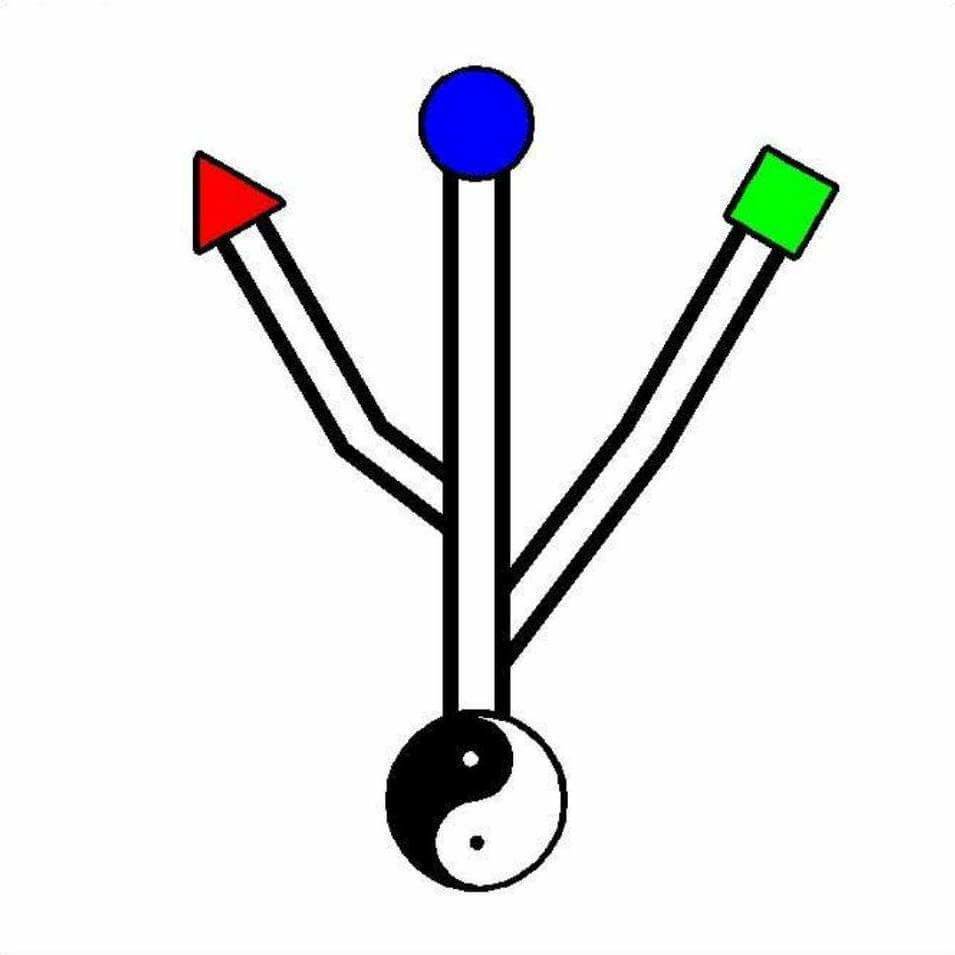

为什么叫安德
我曾经用过“清出于兰”做网名，清是我兰是母亲，过早失去母亲的我总是幻想着她陪在身边的欢乐，这种执念如此之深以致我创立公司的时候直接就用“清兰”做商号。后来将公司扔给了大舅舅，他说这名称在商业上不方便建议将给改了，就改成了他的名字。后来三舅舅叫我也替他弄一个法人实体，我建议他直接用大舅舅的，他说公司名字让他不好开展业务，好吧，但我还是没吸取教训，在创办新公司的时候，再次用三舅和三舅妈的名字做了商号。
细想前面的经历，我觉得自己思虑不周言行不谨。如果我要重新创办一个实体，该取一个什么名字呢？我首先想到的是苹果公司故事，乔布斯当时取Apple原因之一是A在顺序排第一，这样在排序上就能靠前。不知谷歌的母公司“阿尔法”及“安卓”是不是也是基于同样的考虑？好吧，我也要选一个A开头的。我直接就想到了And中文意思和，古有“和而不同”今有“和谐社会”，“和气生财”就是它了。但直接用and肯定不行，在商号和商标上会有 很多麻烦。受盛田昭夫将sonny减n得到Sony启发，我将and加e的到Ande，中文安德，字面意思就是安养德行。其实安德一词，最先让我想到的是初一的时候的一件事：某次兴趣班课后，回到教室看见黑板上有周易上的几句话“天行健君子以自强不息，地势坤君子以厚德载物”，从此迷上了周易。安德就是厚德载物自强不息，最终目的还是为了“和”，可谓殊途同归。
关于标志
在确定了商号之后就是logo的问题了。我首先想到的是梅赛德斯-奔驰用方向盘做logo简洁明了，于是我打起了and的简写符“&”的主意，直接用“&”肯定不行，在将它旋转之后，我想到了树：无数的根藏于黑暗只有少数的枝叶现于光明。好吧，我承认受火影影响了。所以我要设计的是一棵树，这时我想到的的usb的logo，据说是借鉴了海神波赛冬的三叉戟，三角形、方框、圆圈为了表明usb的通用性。我膨胀了也想做一个通用的实体，就像通用电气和通用汽车那样。但我是一个喜欢将事情变复杂的人。首先，我受道和易经的哲学影响很深，道生一一生二三生万物，地下的根用阴阳鱼就好，枝条取三就好。万物有序，三根枝条当然有长有短，取多少好呢，我想到的是勾三股四弦五，和数学扯上关系了，但直接用勾三股四弦五三角形做的分叉不美观，于是勾三到一股四到二时都将夹角改成了60度。除了勾股定理，我还想给三根枝条赋予其他的蕴味，三角、方、圆在我看来可以和三才和三原色相对应。故天为蓝为圆居上，地为绿为方居下，人当热血赤诚，做个三角形一样牢靠的人立于天地间。

这番解释后，我对这个名号和标志相当满意，赶紧撰文发表。谁敢抄袭，看我不穷尽所学整死你，好歹是有法学学位的人。